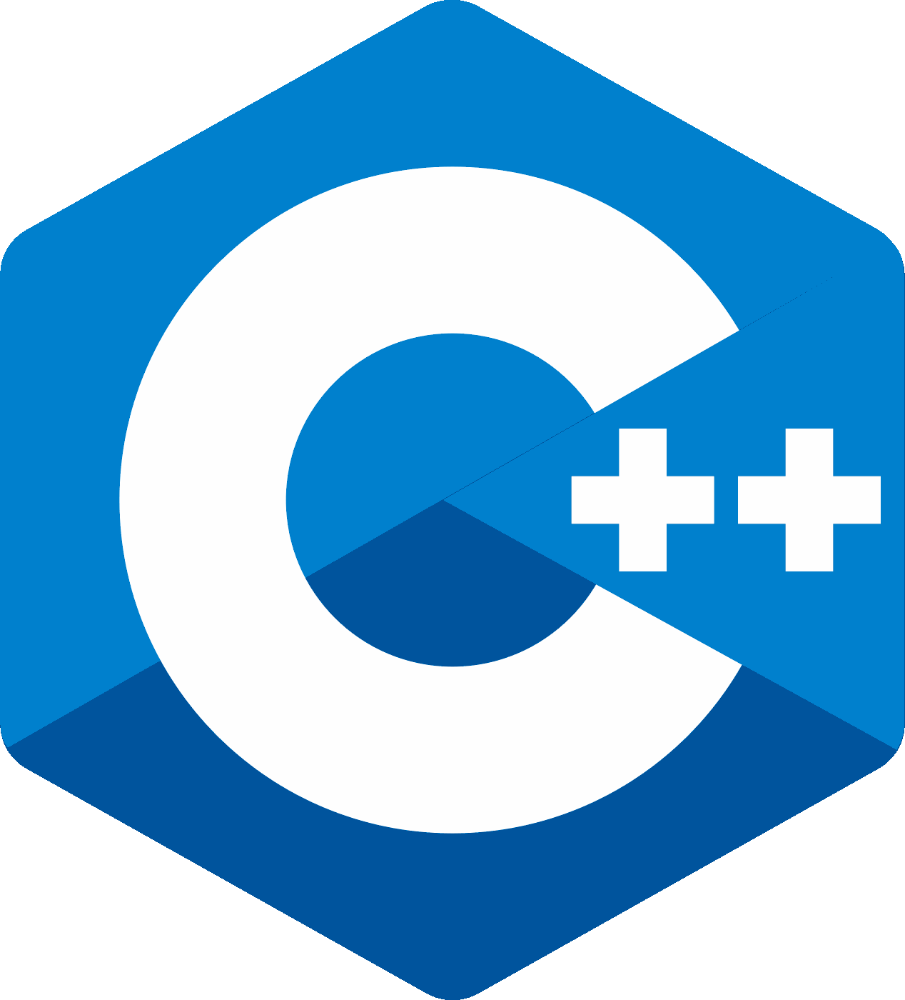
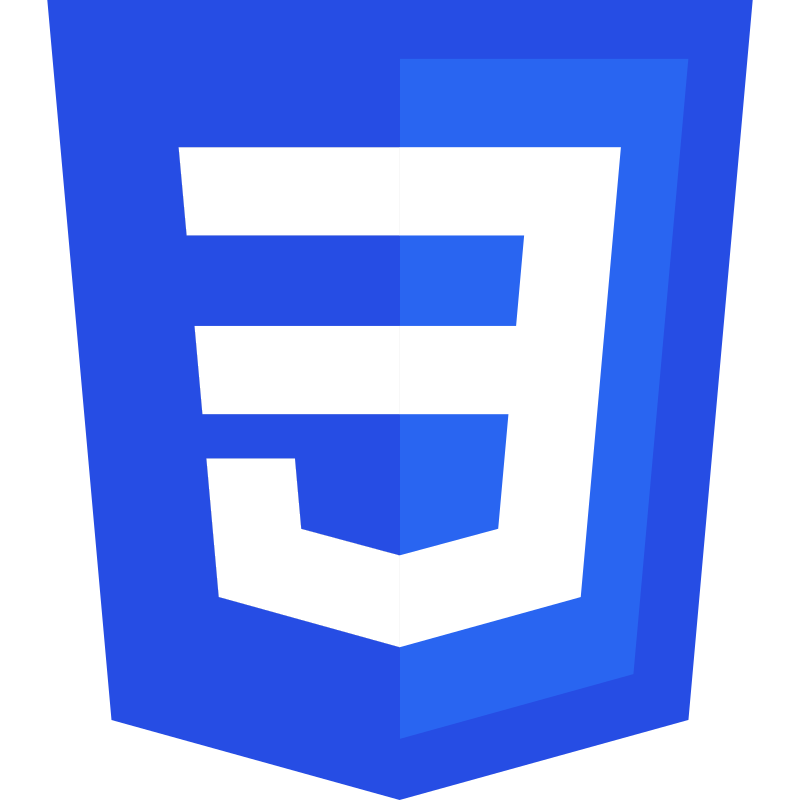

Skills
-

Python
-
Python's one of the languages I've been using longest. I began experimenting with it in junior high, and have since used it for numerous applications, including making Discord bots, webservers, proxy servers and even digital art. While I don't prefer object-oriented programming, I consider myself very proficient in it.
Currently, I most commonly employ it in creating Flask webservers. I have also done work with database management, especially with MongoDB.
-

C
-
C is a language I learned more recently, but may be the language I most prefer using. I consider myself highly proficient with the GCC compiler and GNU utility suite; especially the Valgrind memory checker.
In addition, I recently learned (entirely non-academically) how to successfully use and deploy the Python C API, combining two of my strongest skills. I will soon finish a project that illustrates this and push it to one of my GitHub repositories.
-

C++
-
I have not used C++ as much, but as someone who has extensively used the C language I am confident in my skills with it. Operator overloading is perhaps my favorite feature.
-

HTML
-
Needless to say, I am versed in HTML. I am also fluent in the templating engine Jinja, which I have used to drastically increase my efficiency in academic projects.
-

CSS
-
I'm also versed in CSS, the other fundamental web development language. While I don't prefer my work being frontend-oriented, I can certainly use CSS very well in a pinch.
-

JavaScript
-
As someone who more prefers functional or object-oriented programming over markdown languages and the like, I very much enjoy using JavaScript to make interactive, dynamic webpages.
-

JQuery
-
Ahh... pages that update without refreshing!
I recently picked up JQuery and have very much enjoyed using it for its intended purpose: Server queries!